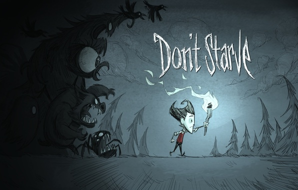

Terraria

Terraria - это пиксельная "песочница", смешивающая Minecraft и приключенческую ролевую игру. Игроки вольны исследовать большой, процедурно генерируемый двухмерный мир, добывать ресурсы, строить здания, искать мощную экипировку и сражаться с разнообразными противниками и угрозами.
Подробнее
Don’t Starve

«Don't Starve» — это бескомпромиссная игра на выживание в диком мире, наполненном наукой и магией. Вы — Уилсон, отважный ученый господин, которого поймал злобный демон и отправил в загадочные дикие земли. Уилсон должен обуздать этот мир и его обитателей, чтобы сбежать отсюда и вернуться в свой родной дом.
Подробнее